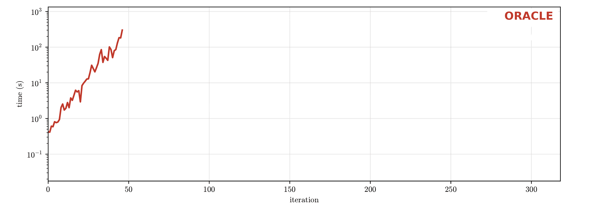

Near Optimal Solutions
Geometry
Objective
Determine the optimal capacity and operational schedule of these facilities at the minimum cost.
Question?
What are the other options if we allow the solution to be ε-suboptimal?
Network schematic based on PyPSA's single-node capacity expansion example.
Near Optimal Solutions
Motivation
Use cases
- Preferable alternatives in political, social, or environmental terms.[1]
- Robust solutions to weather variability[2] and cost uncertainty[3].
- Participatory modeling that lets stakeholders explore trade-offs near the optimum.[4]
[1] Neumann, Fabian, and Tom Brown. "The near-optimal feasible space of a renewable power system model." Electric Power Systems Research 190 (2021): 106690.
[2] Grochowicz, Aleksander, et al. "Intersecting near-optimal spaces: European power systems with more resilience to weather variability." Energy Economics 118 (2023): 106496.
[3] Neumann, Fabian, and Tom Brown. "Broad ranges of investment configurations for renewable power systems, robust to cost uncertainty and near-optimality." iScience 26.5 (2023).
[4] Vågerö, Oskar, et al. "Exploring near-optimal energy systems with stakeholders: a novel approach for participatory modelling." arXiv preprint arXiv:2501.05280 (2025).
Challenges
Discover
- Unknown 𝒵
- Inner approximation ℐ
- Outer approximation 𝒪
Our method builds on ORACLE[1] that approximates 𝒵 with two polytopes.
However, it solves a costly bilevel problem to find 𝑑.
We propose G-ORACLE that replaces the bilevel problem with a geometric solution.

Explore
We propose MGA-Compass[2], an interactive real-time platform:
- User defines a question
- Platform solves the Navigation problem (≈ 2 s)
- User traverses between the endpoints (instantaneous)
[1] Turan, Evren Mert, Stefano Moret, and André Bardow. "ORACLE: A rigorous metric and method to explore all near-optimal designs for energy systems." Computers & Chemical Engineering 210 (2026): 109630.
[2] Hajikazemi, Sina, and Florian Steinke. "Interactive exploration of near-optimal solutions of energy planning models." 22nd International Conference on the European Energy Market (EEM) (2026): 1–6.
Thank You For Your Attention!
Code

Live Demo